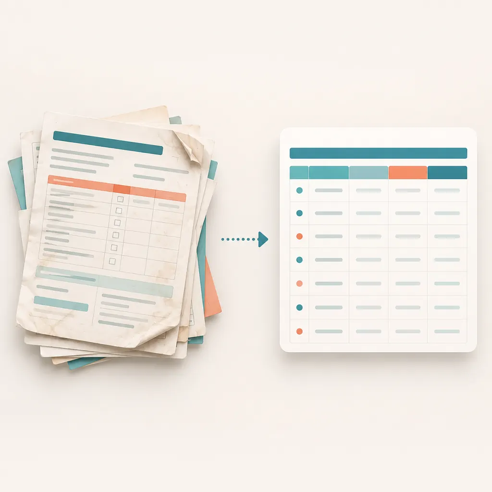
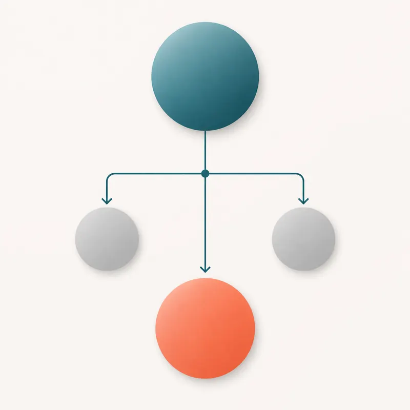

Unidad 4 · Limpieza y preparacion de datos clinicos

Pipeline reproducible
salud_limpia <- salud |>
filter(!is.na(edad), !is.na(imc)) |>
mutate(
imc_categoria = case_when(
imc < 25 ~ "Normal",
imc < 30 ~ "Sobrepeso",
TRUE ~ "Obesidad"
)
)Criterios de exclusion

Registrar por que se excluye un caso evita que la limpieza parezca una decision invisible o arbitraria.